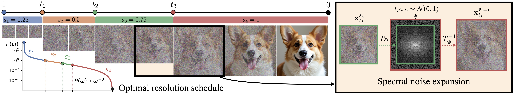

Computational demands for visual generative models are increasing rapidly as image resolutions and video sequence lengths continue to grow. This trend reveals a fundamental scaling crisis: while scaling model and data sizes consistently yields better generation quality, the underlying cost of self-attention in Diffusion Transformers scales quadratically with the number of generated tokens.
Diffusion models have been shown to implicitly generate visual content autoregressively in the frequency domain, where low-frequency components are generated earlier in the denoising process while high-frequency details emerge only in later timesteps. This structure offers a natural opportunity for efficient generation, as high-resolution computation on noise-dominated frequencies is largely redundant.
We propose Spectral Progressive Diffusion, a general framework that progressively grows resolution along the denoising trajectory of pretrained diffusion models. To this end, we develop a spectral noise expansion mechanism and derive an optimal resolution schedule from the model’s power spectrum. Our framework supports training-free acceleration and a fine-tuning recipe that further improves efficiency and quality, enabling significant speedups on state-of-the-art pretrained image and video generation models while preserving visual quality.

Spectral Progressive Diffusion accelerates pretrained image generation models while preserving visual quality across both latent- and pixel-space settings. In training-free inference, our method improves the speed-quality tradeoff on FLUX.1-dev, reaching up to 7.09× wall-clock speedup and 7.36× FLOPs reduction. With lightweight fine-tuning, the same framework further improves quality and efficiency on Z-Image and PixelGen, showing that spectral progressive generation can be used both as a plug-and-play acceleration method and as a fine-tunable recipe.
The framework also extends naturally to video generation and image editing. On WAN 2.1 latent-space video generation, Spectral Progressive Diffusion achieves more than 2× speedup while maintaining high-fidelity VBench performance.
| Method | Speedup ↑ | TFLOPs ↓ | Overall | Image quality | Text alignment | ||
|---|---|---|---|---|---|---|---|
| ImageReward ↑ | CLIP-IQA ↑ | NIQE ↓ | T2I-Comp. ↑ | GenEval ↑ | |||
| FLUX (50 steps) | 1.00× | 2991.01 | 1.095 | 0.707 | 6.75 | 0.634 | 0.698 |
| RALU | 1.58× | 1749.94 | 1.028 | 0.712 | 6.07 | 0.613 | 0.648 |
| Ours (S=2) | 1.66× | 1755.22 | 1.049 | 0.719 | 6.43 | 0.617 | 0.654 |
| FLUX (10 steps) | 4.84× | 610.02 | 0.981 | 0.679 | 6.93 | 0.618 | 0.647 |
| Bottleneck | 4.67× | 571.23 | 0.889 | 0.661 | 9.16 | 0.620 | 0.687 |
| RALU | 4.98× | 540.47 | 1.022 | 0.700 | 6.43 | 0.626 | 0.652 |
| Ours (S=2) | 5.77× | 500.34 | 1.059 | 0.696 | 6.69 | 0.624 | 0.655 |
| Ours (S=3) | 6.09× | 469.15 | 1.042 | 0.701 | 6.53 | 0.623 | 0.637 |
| FLUX (7 steps) | 6.62× | 431.45 | 0.920 | 0.660 | 8.25 | 0.594 | 0.583 |
| Bottleneck | 6.64× | 431.52 | 0.792 | 0.631 | 8.71 | 0.605 | 0.672 |
| RALU | 6.69× | 426.01 | 0.999 | 0.681 | 6.87 | 0.633 | 0.682 |
| Ours (S=2) | 6.78× | 427.03 | 1.039 | 0.689 | 6.78 | 0.620 | 0.667 |
| Ours (S=3) | 7.09× | 406.24 | 1.015 | 0.694 | 5.99 | 0.627 | 0.637 |
Training-free quantitative comparison on FLUX.1-dev (1024² resolution), grouped into 1×, 5×, and 7× wall-clock speedup tiers. Bold = best, underline = second best within each tier. Baseline rows follow the RALU evaluation protocol. S denotes the number of resolution levels. The RALU and Bottleneck method names are hyperlinked to their original papers.
| Method | Speedup ↑ | TFLOPs ↓ | Overall | Image quality | Text alignment | ||
|---|---|---|---|---|---|---|---|
| ImageReward ↑ | CLIP-IQA ↑ | NIQE ↓ | T2I-Comp. ↑ | GenEval ↑ | |||
| Z-Image (50 steps) | 1.00× | 4941.23 | 0.965 | 0.700 | 5.41 | 0.731 | 0.745 |
| Z-Image (32 steps) | 1.56× | 3166.62 | 0.957 | 0.697 | 5.44 | 0.686 | 0.725 |
| Ours (TF, S=2) | 1.65× | 3132.03 | 0.904 | 0.688 | 5.87 | 0.658 | 0.730 |
| Ours (TF, S=3) | 1.74× | 2871.09 | 0.875 | 0.690 | 5.59 | 0.650 | 0.682 |
| Ours (LoRA, S=2) | 1.65× | 3132.03 | 0.982 | 0.699 | 5.72 | 0.725 | 0.731 |
| Ours (LoRA, S=3) | 1.74× | 2871.09 | 0.954 | 0.697 | 5.75 | 0.717 | 0.728 |
| Z-Image (10 steps) | 4.99× | 997.68 | 0.851 | 0.659 | 5.95 | 0.678 | 0.705 |
| Ours (TF, S=2) | 5.04× | 962.95 | 0.860 | 0.668 | 6.17 | 0.677 | 0.693 |
| Ours (TF, S=3) | 5.30× | 875.97 | 0.827 | 0.662 | 5.78 | 0.676 | 0.655 |
| Ours (LoRA, S=2) | 5.01× | 962.95 | 0.923 | 0.683 | 5.58 | 0.706 | 0.738 |
| Z-Image (7 steps) | 5.97× | 701.92 | 0.763 | 0.631 | 6.14 | 0.648 | 0.667 |
| Ours (TF, S=2) | 7.73× | 678.77 | 0.804 | 0.641 | 6.46 | 0.665 | 0.680 |
| Ours (TF, S=3) | 8.08× | 609.18 | 0.759 | 0.630 | 6.16 | 0.658 | 0.645 |
| Ours (LoRA, S=2) | 7.81× | 678.77 | 0.918 | 0.658 | 6.57 | 0.683 | 0.744 |
Fine-tuning quantitative comparison on latent-space image generation (Z-Image) at 1024² resolution (full table, including appendix results), grouped into wall-clock speedup tiers. Bold = best, underline = second best within each tier. In method names, S denotes the number of resolution levels; TF denotes training-free and LoRA the finetuned version with Low-Rank Adaptation (LoRA).
| Method | Speedup ↑ | TFLOPs ↓ | Overall | Image quality | Text alignment | ||
|---|---|---|---|---|---|---|---|
| ImageReward ↑ | CLIP-IQA ↑ | NIQE ↓ | T2I-Comp. ↑ | GenEval ↑ | |||
| PixelGen (25 steps) | 1.00× | 65.36 | 0.921 | 0.734 | 5.95 | 0.574 | 0.794 |
| Ours (TF, S=2) | 1.60× | 33.72 | 0.799 | 0.718 | 6.10 | 0.568 | 0.782 |
| Ours (LoRA, S=2) | 1.55× | 33.72 | 0.913 | 0.728 | 5.87 | 0.580 | 0.776 |
Fine-tuning quantitative comparison on pixel-space image generation (PixelGen) at 512² resolution. Our fine-tuning recipe bridges pretraining and progressive-resolution inference, improving quality while preserving the efficiency gains. Bold = best. S denotes the number of resolution levels.
| Method | Speedup ↑ | TFLOPs ↓ | Subject Consistency ↑ |
Background Consistency ↑ |
Motion Smoothness ↑ |
Dynamic Degree ↑ |
Aesthetic Quality ↑ |
Image Quality ↑ |
|---|---|---|---|---|---|---|---|---|
| WAN 2.1 (50 steps) | 1.00× | 119292 | 0.9492 | 0.9621 | 0.9874 | 0.4800 | 0.5993 | 0.6133 |
| WAN 2.1 (25 steps) | 2.00× | 59646 | 0.9434 | 0.9597 | 0.9879 | 0.4250 | 0.5893 | 0.5706 |
| Ours (S=2) | 2.03× | 57417 | 0.9462 | 0.9598 | 0.9859 | 0.4950 | 0.5975 | 0.6114 |
| Ours (S=3) | 2.54× | 45953 | 0.9299 | 0.9499 | 0.9815 | 0.5700 | 0.5696 | 0.5990 |
Quantitative comparison on latent-space video generation (WAN 2.1) at 720p on VBench. Our training-free approach achieves more than 2× speedup while matching or outperforming the 25-step full-resolution baseline. Bold = best among accelerated methods. S denotes the number of resolution levels.
@article{xiao2026spectral,
author = {Xiao, Howard and Chao, Brian and Yariv, Lior and Wetzstein, Gordon},
title = {Spectral Progressive Diffusion for Efficient Image and Video Generation},
year = {2026},
}